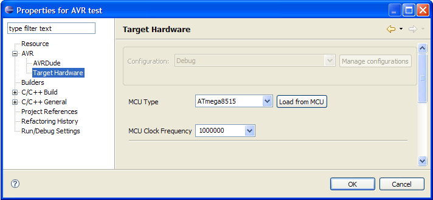

Once you have set up a programmer you can use it to upload a project to your target device. To do this you have to tell the plugin what you want to upload - a flash memory image, an eeprom memory image and/or the fuse bytes and lock bits.
This is done on the project properties dialog. Right click on your project and select Properties from the context menu. Then select AVR > AVRDude:
On this first tab check that the Programmer configuration shows the programmer you have defined in the previous step. If you have more than one programmer configured you can choose the one to use for the project here.
Next click on the Flash/EEPROM tab and in the Upload Flash Memory Image group select from build:

Now, once the project is build and the flash memory image is generated, it can be uploaded to the target.
For this tutorial we will not upload an EEPROM image nor set the fuse and lock bits, so they should be set to do not upload eeprom image, do not set fuse bytes and do not set lockbits (which is the default).

Finally, you should check that the required memory image file is actually generated in the build.
With the properties still open select C/C++ Build > Settings > Additional Tools in Toolchain and check that Generate HEX file for Flash memory is checked for the build configuration you are using ("Debug" in the example screenshot)
.
On this dialog page you could also tick AVRDude to have the plugin start an upload to the target device every time you build the project. Leave this unchecked for this tutorial.
Once you have set all properties you can click on OK to save all changes and close the project properties dialog.
Finally check that the MCU selected for the project is the same as the one connected to your programmer. If they do not match avrdude will refuse to programm the MCU.
Again with the project properties still open select the AVR > Target Hardware page and check that the correct MCU is selected:

If you are not sure what type of target MCU is connected to your programmer you can click on the Load from MCU button.
With the programmer correctly configured, connected, and powered up the plugin will start avrdude to determine the actual MCU (or show an error message if any of the prerequisites is not met).
Add / Remove AVR specific Tools from the Toolchain
© 2008 Thomas Holland